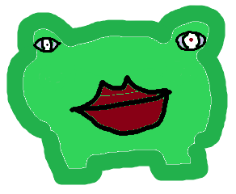
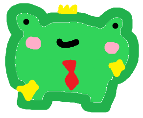
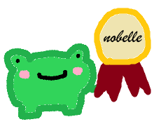
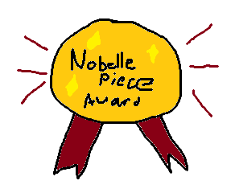

now, this is a very philisophical question. to define what a freg is, we must first find the inner peace to know what anything else is. so, therefore, freg, being not predeterminely defined, is everything. it is also nothing. freg is love, freg is hate, and freg is everything in between. are you freg? or am i freg? if freg were to never exist, would any of us exist? are we all freg? we may never know.
The philisophical answer
he's a frog
freg gallery
regular freg

ray-traced freg
thinking anumation shoutout imgflip

get your streak to 30 days and freg does this !!!!1!!

freg when he gives you a nobelle piece award
freg's purpose in life
freg is there to be sure you read. if you read every day, your freg gets really happy, and starts attending diplomatic cerimonies to propose you winning the nobelle piece award
the nobelle piece award
its just a flex lowk

the freg lore
freg was a little lad but then he found a job delivering the rss feeds to people and now he walks around delivering feeds to people all over the world that sounds a bit wierd now i say it but still then, when he was 33.24235 years old, he began an organisation he would encourage people to read and that began his life mission of his life and so whenever you read an rss feed, know that freg watches over you yayyyyyyyyyyyyyyyyyyyyyyyyyyyy
summary: he delivers your rss feeds and encourages